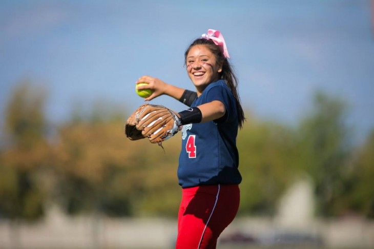

Auxilia a prevenir e a tratar doenças psicológicas
Várias pesquisas revelaram que as pessoas que praticam desporto regularmente tendem a lidar melhor com a pressão e com o stress, ficando menos expostas à depressão, ansiedade e outras doenças de origem psicológica. Esses estudos também concluíram que o exercício pode também assegurar vários benefícios terapêuticos no que toca ao tratamento de desordens psicológicas.
Motiva a exploração de diferentes passatempos
A prática de desporto ensina-nos muitas coisas, grande parte sobre nós próprios, colocando-nos permanentemente novos desafios e, por vezes obrigando-nos a sair da nossa zona de conforto. Ocasionalmente trocamos de atividade física, para explorar novos caminhos e novos passatempos para tentar descobrir no que somos bons ou de que podemos gostar.
Promove a autoestima
A prática regular de desporto e hábitos nutricionais saudáveis levam a uma melhoria da sua imagem e a que se sinta bem consigo mesmo, fazendo com que se veja através de uma perspetiva mais positiva.
Promove a felicidade
O desporto é uma atividade que nos faz sentir bem em todos os níveis, e isto deve-se ao facto do desporto fazer com que a produção de endorfinas no cérebro aumente, elevando os níveis de satisfação e felicidade em geral.

Ajuda à integração social
Praticar desporto pode ser benéfico para o desenvolvimento das nossas capaci- dades sociais, facilitando a interação e comunicação com outras pessoas. Entre outras razões, como a necessidade funcional por si só (afinal, são raros os exercí- cios praticados de forma completamente individual), o facto de a confiança sair reforçada já irá facilitar o contato interpessoal.